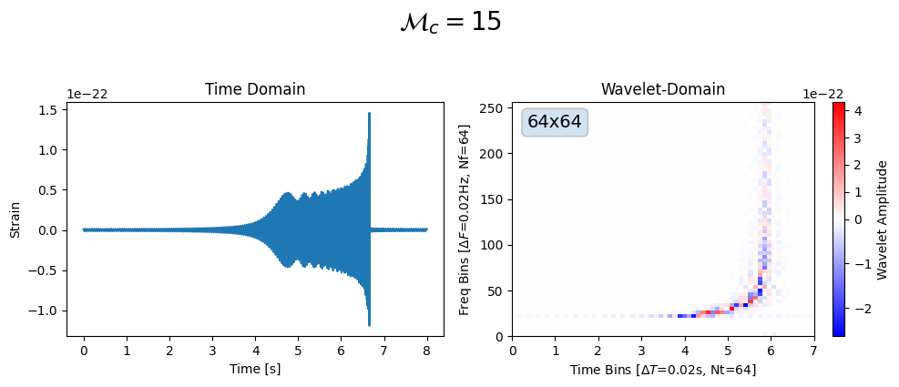
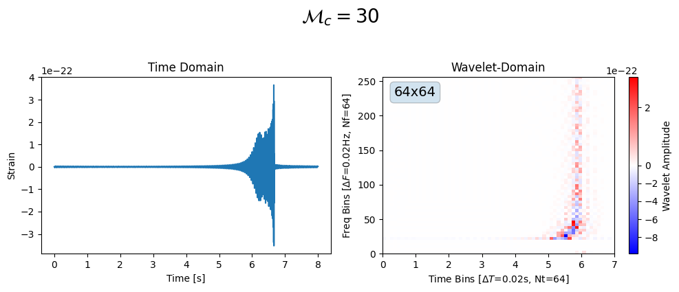
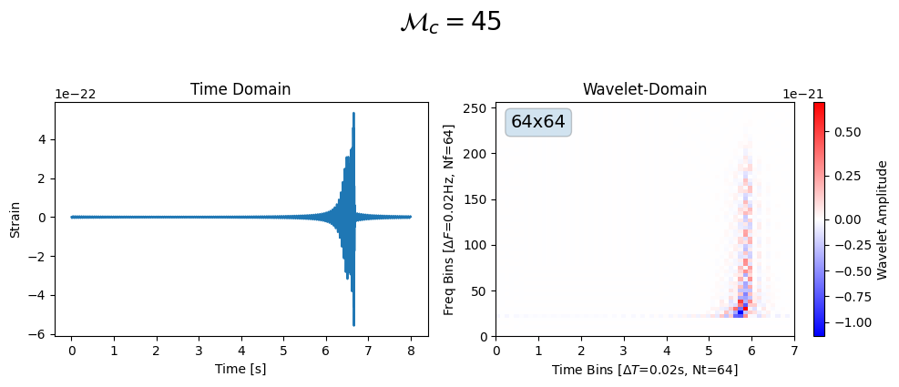
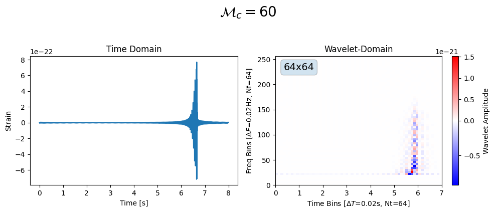
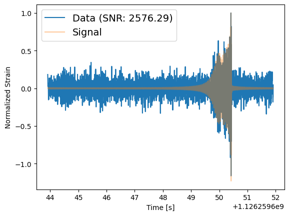
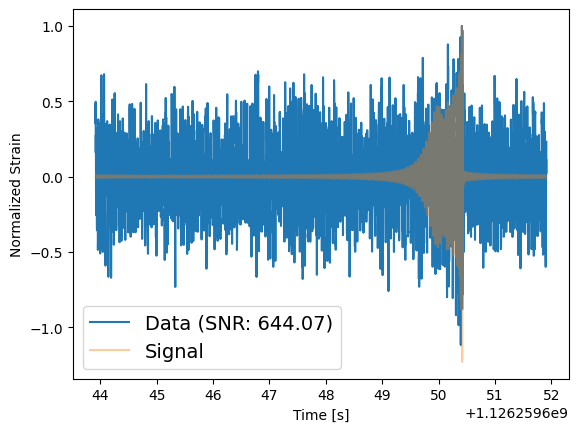
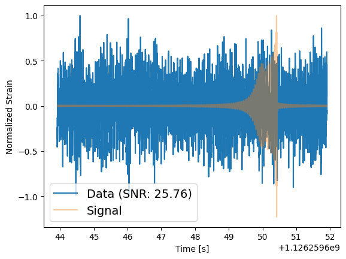

CBC Waveform in wavelet domain#
Basic Waveform#
import numpy as np
import matplotlib.pyplot as plt
from pycbc.waveform import get_td_waveform
from pycbc.conversions import mass1_from_mchirp_q, mass2_from_mchirp_q
from pywavelet.waveform_generator.generators import FunctionalWaveformGenerator
from pywavelet.plotting import plot_wavelet_domain_grid
from pywavelet.transforms.types import TimeSeries
import bilby
import numpy as np
import logging
bilby_logger = logging.getLogger("bilby")
bilby_logger.setLevel(logging.ERROR)
Nf, Nt = 64, 64
mult = 16
DURATION = 8
SAMPLING_FREQUENCY = 512
MINIMUM_FREQUENCY = 20
CBC_GENERATOR = bilby.gw.WaveformGenerator(
duration=DURATION,
sampling_frequency=SAMPLING_FREQUENCY,
frequency_domain_source_model=bilby.gw.source.lal_binary_black_hole,
parameter_conversion=bilby.gw.conversion.convert_to_lal_binary_black_hole_parameters,
waveform_arguments=dict(
waveform_approximant="IMRPhenomD",
reference_frequency=20.0,
minimum_frequency=MINIMUM_FREQUENCY,
),
)
GW_PARMS = dict(
mass_1=30,
mass_2=30, # 2 mass parameters
a_1=0.1,
a_2=0.1,
tilt_1=0.0,
tilt_2=0.0,
phi_12=0.0,
phi_jl=0.0, # 6 spin parameters
ra=1.375,
dec=-1.2108,
luminosity_distance=2000.0,
theta_jn=0.0, # 7 extrinsic parameters
psi=2.659,
phase=1.3,
geocent_time=1126259642.413,
)
def cbc_waveform(mc, q=1):
m1, m2 = bilby.gw.conversion.chirp_mass_and_mass_ratio_to_component_masses(
mc, q
)
params = GW_PARMS.copy()
params["mass_1"] = m1
params["mass_2"] = m2
h = CBC_GENERATOR.time_domain_strain(params)["plus"]
# template sets max amplitude t=end of waveform, so we roll it back a bit
h = np.roll(h, -len(h) // 6)
t = CBC_GENERATOR.time_array
return TimeSeries(h, t)
def create_cbc_wavelet_waveform_generator():
hfunc = lambda mc: cbc_waveform(mc, q=1)
# NOTE: Nf * Nt == len(h) returned from h-func
waveform_generator = FunctionalWaveformGenerator(hfunc, Nt=Nt, mult=mult)
return waveform_generator
wavelet_generator = create_cbc_wavelet_waveform_generator()
for i, mc in enumerate([15, 30, 45, 60]):
wavelet = wavelet_generator(mc=mc)
ht = cbc_waveform(mc=mc, q=1)
fig, axes = plt.subplots(1, 2, figsize=(10, 4))
axes[0].plot(ht.time, ht.data)
axes[0].set_xlabel("Time [s]")
axes[0].set_ylabel("Strain")
axes[0].set_title(f"Time Domain")
fig = wavelet.plot(ax=axes[1])
axes[1].set_title(f"Wavelet-Domain")
fig.suptitle(r"$\mathcal{M}_c=" + f"{mc}$", fontsize=20, y=1.05)
fig.tight_layout()
fig.savefig(f"cbc_wavelet_mc_{mc}.png")
fig.show()




Waveforms in noise#
Let’s inject the signals into LIGO detector noise (at design sensitivity), compute the SNR in the time and the wavelet domains.
def get_ifo(t0):
ifos = bilby.gw.detector.InterferometerList(["H1"]) # design sensitivity
ifos.set_strain_data_from_power_spectral_densities(
sampling_frequency=SAMPLING_FREQUENCY,
duration=DURATION,
start_time=t0,
)
return ifos
def inject_signal_in_noise(mc, q=1, distance=1000):
injection_parameters = GW_PARMS.copy()
(
injection_parameters["mass_1"],
injection_parameters["mass_2"],
) = bilby.gw.conversion.chirp_mass_and_mass_ratio_to_component_masses(
mc, q
)
injection_parameters["luminosity_distance"] = distance
ifos = get_ifo(injection_parameters["geocent_time"] + 1.5)
ifos.inject_signal(
waveform_generator=CBC_GENERATOR, parameters=injection_parameters
)
ifo: bilby.gw.detector.Interferometer = ifos[0]
waveform = CBC_GENERATOR.frequency_domain_strain(injection_parameters)
signal = ifo.get_detector_response(waveform, injection_parameters)
snr = ifo.optimal_snr_squared(signal)
return ifo.time_array, ifo.strain_data.time_domain_strain, np.abs(snr)
for d in [500, 1000, 5000]:
t, h, _ = inject_signal_in_noise(mc=30, q=1, distance=0.1)
_, data, snr = inject_signal_in_noise(mc=30, q=1, distance=d)
plt.plot(t, data / np.max(data), label=f"Data (SNR: {snr:.2f})")
plt.plot(t, h / np.max(h), alpha=0.4, label=f"Signal")
plt.legend(fontsize=14)
plt.ylabel("Normalized Strain")
plt.xlabel("Time [s]")
plt.show()



Wavelet domain PSD#
We need a wavelet domain PSD… Lets generate this by taking the median of several wavelet transforms of just noise.
def __get_noise_wavelet_data(t0):
noise = get_ifo(t0)[0].strain_data.time_domain_strain
noise_wavelet = from_time_to_wavelet(noise, Nf, Nt)
return noise_wavelet
def __get_wavelet_psd_from_median_noise(n=32):
"""n: number of noise wavelets to take median of"""
noise_wavelets = []
for i in range(n):
np.random.seed(i)
noise_wavelets.append(__get_noise_wavelet_data(i * DURATION))
return np.median(np.array(noise_wavelets), axis=0)
psd_wavelet = __get_wavelet_psd_from_median_noise()
fig = plot_wavelet_domain_grid(psd_wavelet, Nf, Nt)
---------------------------------------------------------------------------
NameError Traceback (most recent call last)
Cell In[3], line 16
12 noise_wavelets.append(__get_noise_wavelet_data(i * DURATION))
13 return np.median(np.array(noise_wavelets), axis=0)
---> 16 psd_wavelet = get_wavelet_psd_from_median_noise()
17 fig = plot_wavelet_domain_grid(psd_wavelet, Nf, Nt)
Cell In[3], line 12, in get_wavelet_psd_from_median_noise(n)
10 for i in range(n):
11 np.random.seed(i)
---> 12 noise_wavelets.append(get_noise_wavelet_data(i * DURATION))
13 return np.median(np.array(noise_wavelets), axis=0)
Cell In[3], line 3, in get_noise_wavelet_data(t0)
1 def get_noise_wavelet_data(t0):
2 noise = get_ifo(t0)[0].strain_data.time_domain_strain
----> 3 noise_wavelet = from_time_to_wavelet(noise, Nf, Nt)
4 return noise_wavelet
NameError: name 'from_time_to_wavelet' is not defined
Wavelet domain SNR#
from pywavelet.transforms import from_time_to_wavelet
from pywavelet.utils.snr import compute_snr
t, h, _ = inject_signal_in_noise(mc=30, q=1, distance=0.1)
_, data, time_domain_snr = inject_signal_in_noise(mc=30, q=1, distance=5000)
data_wavelet = from_time_to_wavelet(data, Nf, Nt)
h_wavelet = from_time_to_wavelet(h, Nf, Nt)
wavelet_snr = compute_snr(h_wavelet, data_wavelet, psd_wavelet)
print(wavelet_snrpsd_f)
[[nan nan nan ... nan nan nan]
[nan nan nan ... nan nan nan]
[nan nan nan ... nan nan nan]
...
[nan nan nan ... nan nan nan]
[nan nan nan ... nan nan nan]
[nan nan nan ... nan nan nan]]